High-Protein Meal Prep Recipes
Cooked protein in the fridge is the single biggest reason people stick to eating this way. These 23 recipes are the batch-cook heroes of the book — chilis, sheet-pans, egg muffins and make-ahead bowls that taste just as good on day three.
23 recipes · every one lands ≈70 g of protein with under 20 g net carbs · tap any card for the full recipe, macros & dietary swaps
 Grilled Chicken & Feta Power Bowl
Grilled Chicken & Feta Power Bowl
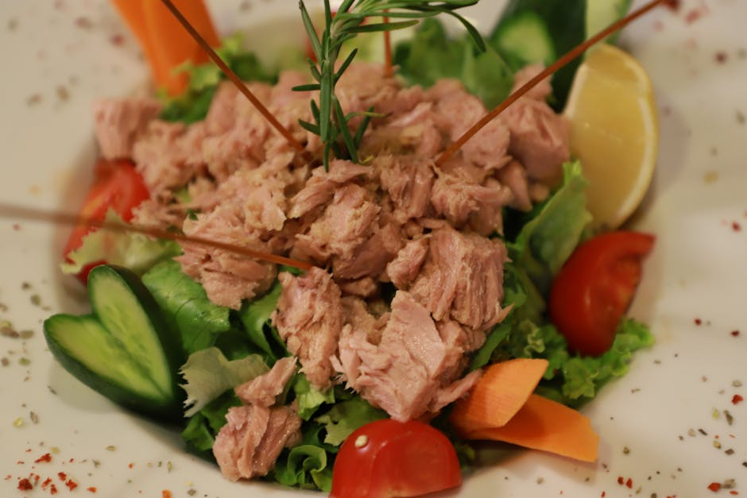
Tuna & Avocado Salad Lettuce Wraps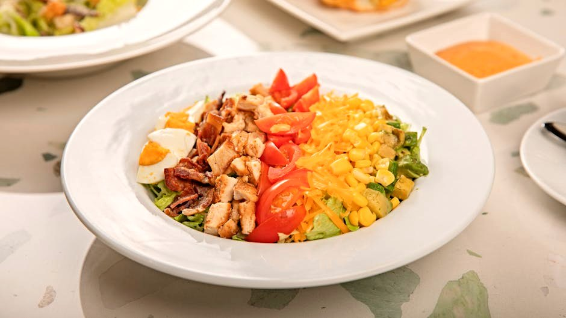
Turkey Cobb Salad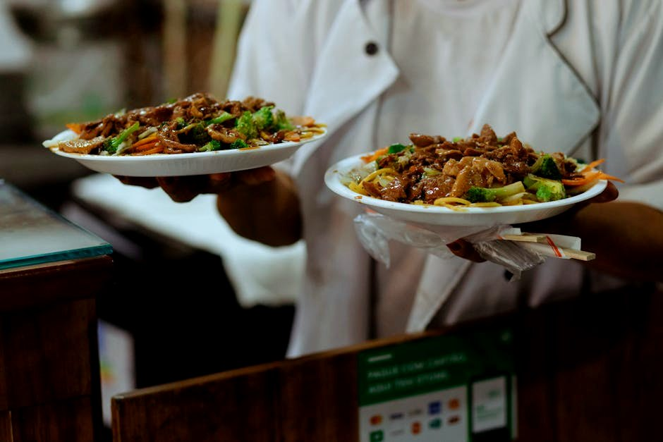
Beef & Broccoli Stir-Fry Sesame Tofu & Edamame Bowl
Sesame Tofu & Edamame Bowl
 Sheet-Pan Chicken Thighs with Brussels Sprouts
Sheet-Pan Chicken Thighs with Brussels Sprouts
 Low-Carb Beef Chili
Low-Carb Beef Chili
 Greek Chicken Souvlaki Bowl with Tzatziki
Greek Chicken Souvlaki Bowl with Tzatziki
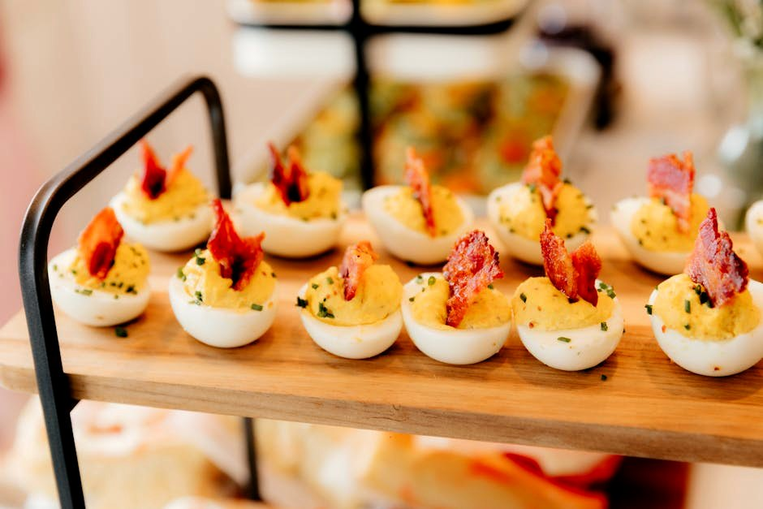
Ham & Cheddar Egg-White Muffins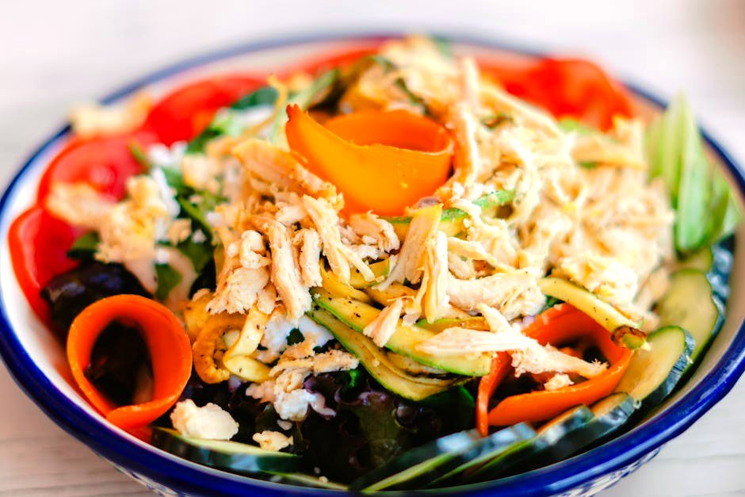
Chicken Shawarma Salad Bowl Turkey Meatballs in Marinara with Zoodles
Turkey Meatballs in Marinara with Zoodles
 Chocolate Protein Chia Pudding
Chocolate Protein Chia Pudding
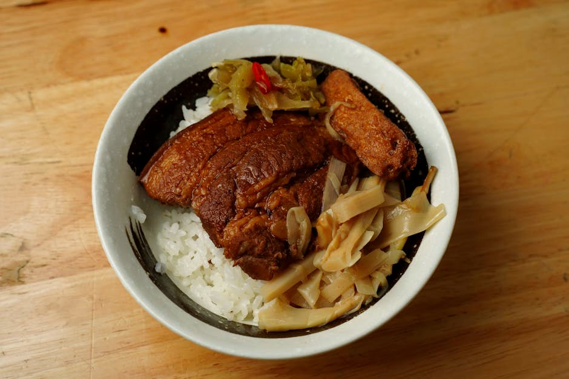
Pork Carnitas Cauliflower-Rice Bowl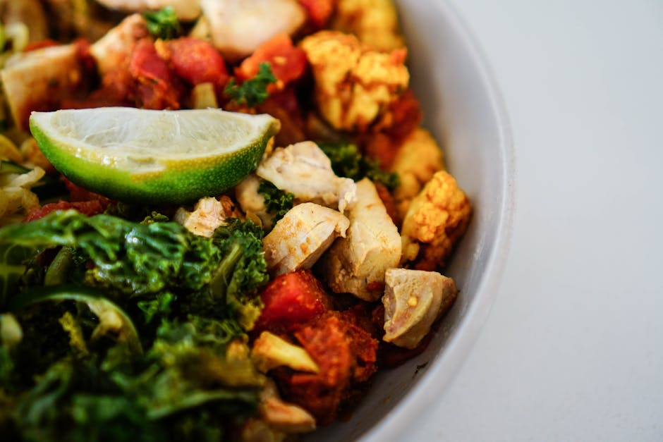
Chicken Tikka Salad Bowl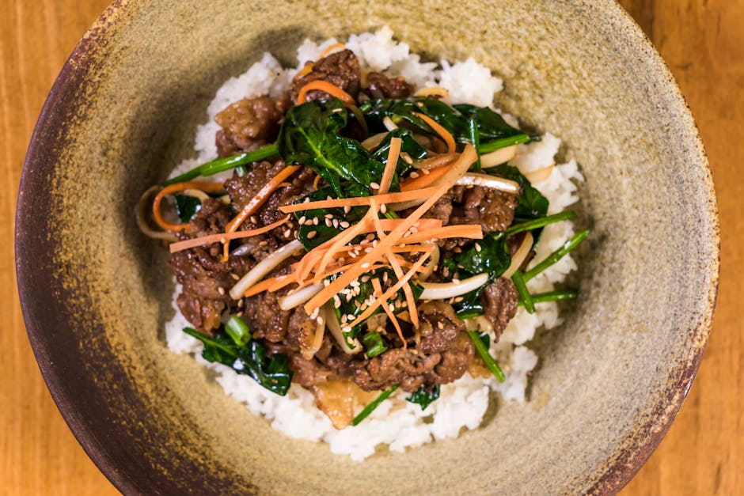
Korean Beef Bulgogi Cauliflower Bowl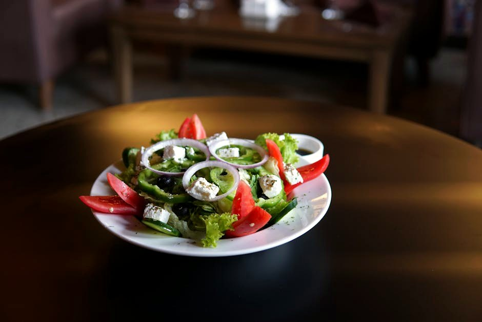
Greek Chicken & Feta Salad Bowl Chicken Tikka Masala with Cauliflower Rice
Chicken Tikka Masala with Cauliflower Rice
 Moroccan-Spiced Chicken with Cauliflower
Moroccan-Spiced Chicken with Cauliflower
 Chicken Cacciatore
Chicken Cacciatore
 Swedish-Style Beef Meatballs in Cream Sauce
Swedish-Style Beef Meatballs in Cream Sauce
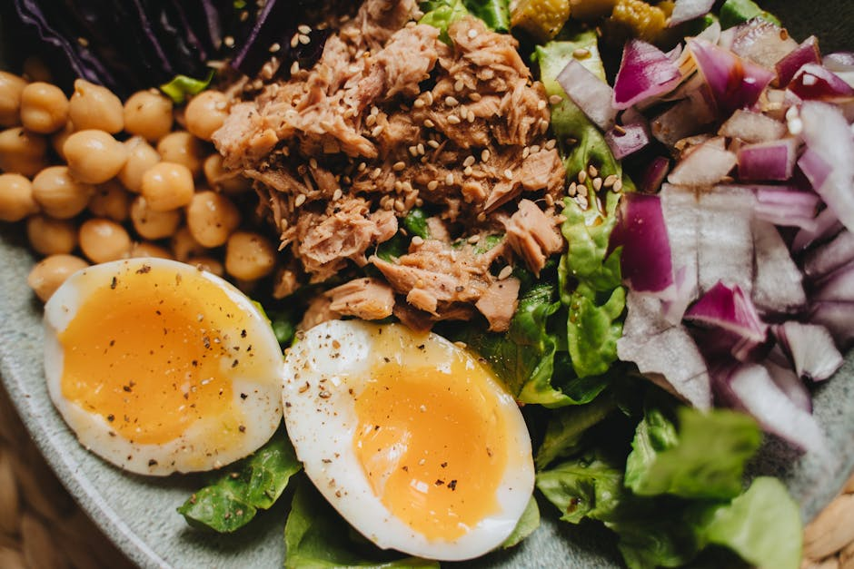
Tuna & Egg Protein Box Frozen Greek Yogurt Protein Bark
Frozen Greek Yogurt Protein Bark
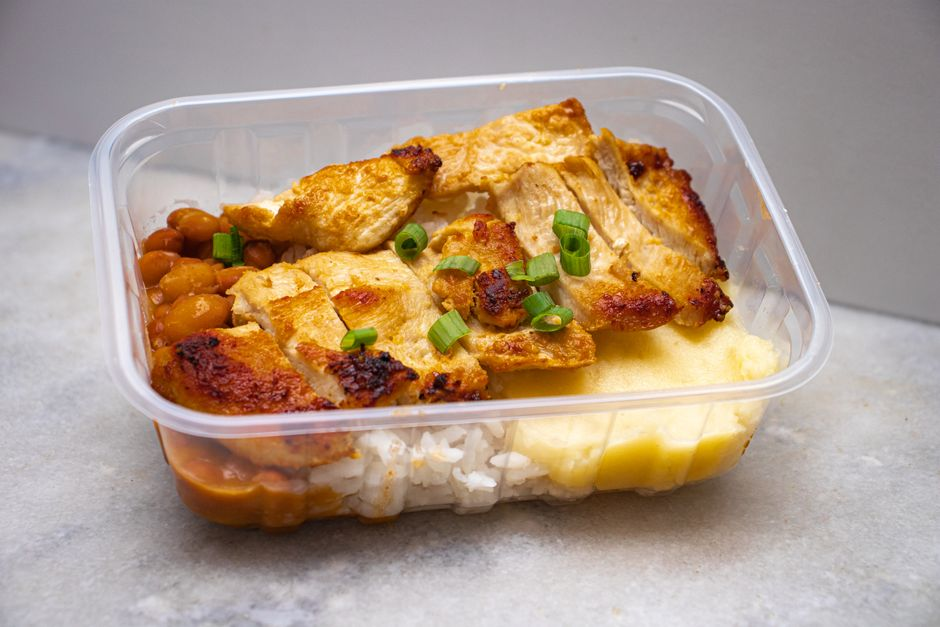
Chicken & Cheese Protein BoxMore collections: High-Protein Breakfast Ideas · High-Protein Lunch Ideas · High-Protein Dinner Recipes · High-Protein Snacks · Vegetarian High-Protein Recipes · Quick High-Protein Meals (Under 30 Minutes) · High-Protein, Low-Calorie Meals